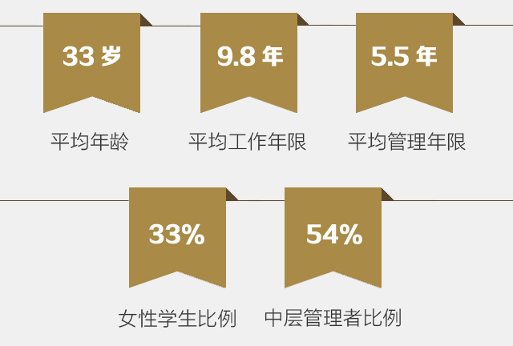
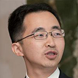
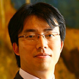
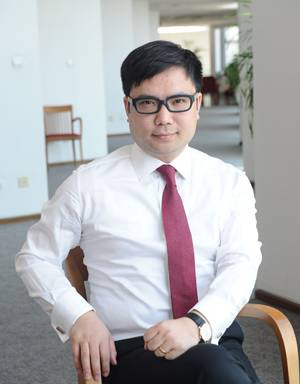
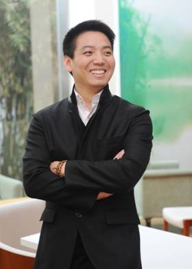
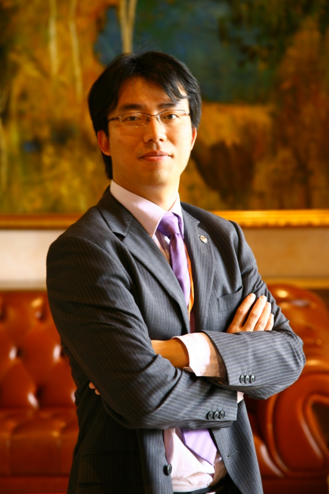

2014级FMBA学生构成
学生故事
-

- 
- 

在中欧，遇见更好的自己
冯细：汇丰银行
FMBA2012级
本土金融实践的“探路者”
山内裕也：三井住友资产管理公司 上海代表处首席代表。
FMBA2012级
与中华大地有着近十年的深厚渊源，说着一口标准、流利的普通话，山内裕也（以下简称“山内”）是典型的“中国通”，也是中欧FMBA为数不多的日本学生之一。
山内毕业于日本京都大学法学部，1996年毕业后参与日本政府工作，十年的外交部工作经历，培养了他严谨、务实的工作作风，也使他在中日合作事务中与中国结下了不解之缘。2006年，山内转战金融行业，凭借多年来对中国的了解，专注国内二级市场投资。转眼又近十年，他经历了中国股市的沉浮跌宕，也见证了中国金融业在风雨兼程的改革之路上迈出的每一步。
行走于FMBA课堂间的营销达人
文砚君 梦之队(上海)国际贸易有限公司创始人，董事长兼CEO。
FMBA2012级
翻开文砚君的履历，你会自然而然把他与“营销达人”的身份联系起来：
1997 年，从销售做起， 10 年效力于丝宝、雅倩和丁家宜，伴随三家公司从发展走向辉煌；
2006 年，一次创业，与同事一起创立“嗳呵”母婴品牌，仅用五年便撼动美国老牌母婴品牌强生的市场地位；
2010 年，梅开二度，创立“锐度”专业男士运动护肤品牌，品牌经过两轮融资进入迅速发展期， 2013 年销售额已达 2.5 亿元。
无论是职业经理人的 10 年，还是创业的 8 年，文砚君都用一份份傲人的成绩单证明自己在营销领域的战斗力。或许你会疑惑为什么一位“营销达人”会迈入中欧 FMBA 的课堂？请随笔者一起走过文砚君的那些年与这些年。

十年，职业经理人到创业者的华丽转身
1997 年，文砚君走出校园之时正值国内消费品行业快速发展。当时丝宝集团正在招销售，对他而言销售是最可行的职业起点，就这样，被时代大潮裹着走，他误打误撞地成为丝宝集团的一名基层销售。而正是当年这样一个被动的选择，却为他做出了一个正确的决定，也让他与品牌营销结下了不解之缘。
有故事的人
陆晓晖：上海融义投资咨询有限公司总经理。
FMBA2012级
21 岁，完成证券从业考试所有科目；
22 岁，大学毕业进入银行工作，正式迈入金融业；
25 岁，合伙创业，成立上海恒义投资咨询有限公司；
27 岁，接触佛教，信仰的力量使他更加从容与豁达；
30 岁，创立“融义社区”品牌；皈依佛教；加入中欧 FMBA ，系统学习金融与管理之道，探寻公司长期发展之路；
31 岁，谈恋爱，“闪婚”，成为“准爸爸”；
32 岁，基于经验与方法的积累，公司迅速发展并扩张；
35 岁，计划在中国西部开办学校，并在未来将此作为其终身事业。
—— 这就是一路走来的陆晓晖，和他这条“一切尽在掌握”的人生轨迹。

一家公司：经营信任的创业理念
性格决定命运，这句话用在陆晓晖身上再合适不过了。目标明确、颇具挑战与创新精神的陆晓晖是一名典型的实干派选手。在银行工作的几年，他越来越清楚地认识到，国内理财机构与客户利益的冲突普遍存在，而他真正想要做的是一番建立在“尊重”与“信任”基础上的“多方共赢”的事业。于是，他毅然选择了创业，并在新兴的社区财富管理领域淘到了第一桶金。
然而，此时的陆晓晖也更加清醒地意识到，公司初期的盈利存在很大程度的偶然性，公司的发展与扩张对管理和运营提出了更高的要求。因此，为了学习系统化的金融与管理知识，为了找到社区理财门店成功的经营模式、有效的复制方法，他选择来中欧读 FMBA ，并获得了超乎预期的回报。
FMBA“小王子”是怎样炼成的
郭锴曦：北京诺华制药有限公司业务分析经理。
FMBA2013级
“ 2013 中欧好声音”的舞台，所有人都感受到了 FMBA 人的热情和凝聚力，所有人的目光都投向了这位“外表吸引眼神，歌声打动灵魂”的“最具人气奖”获得者 ——2013 级 FMBA 学生郭锴曦（ George Guo ）。
今年即将迎来而立之年的郭锴曦，肤色白皙，气质干净，被“粉丝”们亲切地称作“乔治白”、“小王子”。走近郭锴曦，你会发现他既是在舞台中央自弹自唱的歌者，又是在职场打拼多年的行业精英，既有青春的热情与阳光，又有三十而立的成熟与担当。
从启程到传承——致我们共同走过的岁月
葛敏敏：中国国际金融有限公司人力资源部经理。
FMBA2012级
在入学住读模块的 Techmack 管理实战模拟中，来自金融及相关行业、不同职业背景的同学们聚在一起，每天讨论到深夜，有时也争得面红耳赤，就在这样全情投入的氛围中，我们开始认识彼此。无论来自哪里，我们的共同点是多么显而易见：求知的热情、对同窗情谊的珍惜、对未来共渡两年时光的无限期待。

中欧FMBA——我的“改变”新平台
陈登访：平安数据科技(深圳)有限公司共享运营中心运营支持部副总经理。
FMBA2012级

教学模式对实际工作的“改变”
毫无疑问中欧为 FMBA 课程整合了顶尖的国际化教授队伍：丁远教授的睿智，分析问题一针见血；王高教授的循循善诱，启发多角度思考； BALA 教授的幽默、风趣和国际化视野……这些教授的共同之处在于，都拥有非常丰富的实务经验，能够将系统化的理论体系通过结合实际工作和各种案例，深入浅出、生动形象地娓娓道出，这种教学模式让我能够最大程度针对自己的现有工作进行思考，并逐步推动改变。
用行走改变TA的世界
陆斯惟：上海喔噻互联网科技有限公司首席财务官。
FMBA2012级
因为理想，因为爱情，
因为信念，因为了解。
无论我们的地位有多么悬殊，我们的财产有多么悬殊，我们无非都是一样在路上行走。